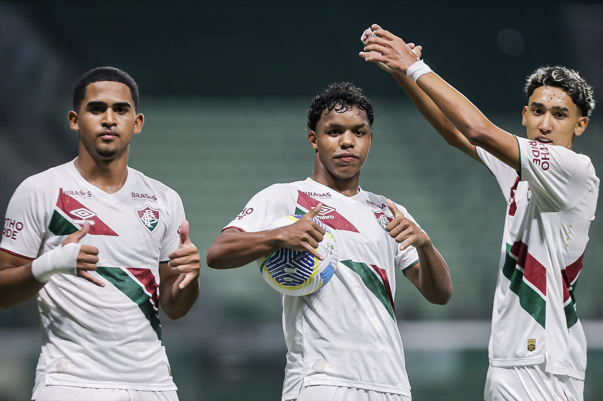

Vem que tem! Fluminense vence o Palmeiras e é campeão brasileiro Sub-17
Moleques de Xerém conquistam bicampeonato com vitória por 2 a 0 no Allianz Parque
01/11/2024

É CAMPEÃO! Com gols de Isaque e Wesley Natã, o Fluminense derrotou o Palmeiras, nesta sexta-feira (01/11), no Allianz Parque, em São Paulo (SP), por 2 a 0, conquistando o bicampeonato brasileiro Sub-17. O clube passa a ser o maior vencedor da principal competição de base do país, ao lado de Flamengo e do próprio Alviverde.
O JOGO
A final começou bastante disputada, mas logo se desenhou para o Fluminense, que, envolvendo o adversário com sua troca de passes, ganhou campo e, na hora certa, soube ser decisivo. Em meio às finalizações de longa distância de Wesley Natã e Riquelme Felipe, além de Keven Samuel, que deu trabalho ao goleiro, o Tricolor teve a seu favor um pênalti marcado pelo VAR. Aos 27 minutos, Isaque aproveitou o rebote da penalidade sofrida por Riquelme e abriu o placar. De volta à decisão pela primeira vez desde o título conquistado em 2020 com a Geração dos Sonhos, o Flu, com Riquelme Felipe, logo conseguiu o segundo, que, também com auxílio do VAR, acabou anulado.
A rede voltou a balançar à valer aos 49 minutos, quando, após bela tabela com Isaque, Wesley Natã passou como quis pelo goleiro e só empurrou para o fundo da rede. O atacante já havia marcado no empate em 1 a 1 entre as equipes no último dia 6 de agosto, em Guarulhos (SP), pela sexta rodada do Grupo B. Foi a única vez que o rival, dono de melhor campanha e que defendia o bicampeonato, perdeu ponto na fase de grupos. Na volta do intervalo, o Fluminense resistiu às investidas dos donos da casa com Gustavo Félix e sua defesa e, escapando da pressão, descolou com Keven Samuel a chance de ampliar. O centroavante, porém, cabeceou por cima. Riquelme Felipe ainda tentou o seu, mas parou no goleiro.

A CAMPANHA
Classificado como vice-líder do Grupo B, somando 15 pontos, o Fluminense avançou ao mata-mata com quatro vitórias, três empates e duas derrotas, além de 19 gols pró e 14 contra. Os Moleques de Xerém passaram pelas quartas de final ao vencerem o Flamengo pelo placar agregado de 3 a 1 - 1 a 1, na Gávea, e 2 a 0, no Estádio Marcelo Vieira, em Xerém. A última vaga na decisão veio com triunfo por 2 a 1 sobre o Santos, depois de empate em 2 a 2 no Estádio Raulino de Oliveira, em Volta Redonda (RJ). A molecada levantou o troféu ao vencer a final única contra o Palmeiras, nesta sexta-feira (01/11), no Allianz Parque, em São Paulo (SP), por 2 a 0. O centroavante Keven Samuel terminou artilheiro do clube na disputa, com sete gols, enquanto o meia Isaque foi o garçom, com cinco assistências. Vale lembrar que, desde a estreia do torneio, em 2019, o Time de Guerreiros nunca ficou de fora das eliminatórias.

Texto: Comunicação/FFC
Fotos: Leonardo Brasil/FFC